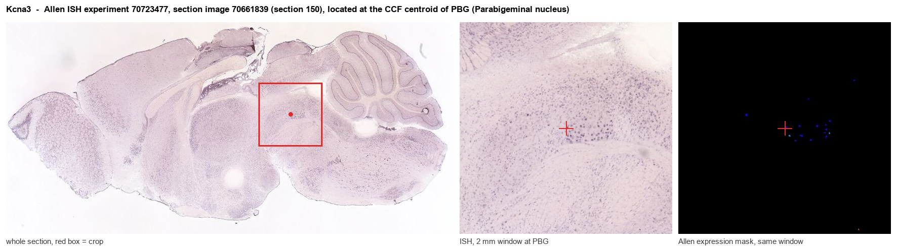
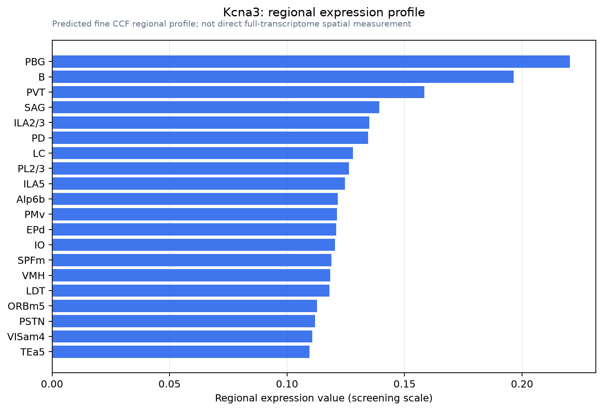

Kcna3
Potassium voltage-gated channel subfamily A member 3 (MK3) (Voltage-gated potassium channel subunit Kv1.3)
Spatial tier: RESTRICTED · Class: ION_CHANNEL · Top region: PBG (Parabigeminal nucleus) · Positive regions: 24/554
42.2Discovery Score
33.2Targetability Score
CEvidence grade C
What this means: Kcna3: fine CCF profile is restricted toward PBG (top regions: PBG, B, PVT, SAG, ILA2/3; 24 positive regions); direct spatial validation is still required.
Function in PBG: evidence, prediction, innovation
- Gene function
- Kcna3 encodes Kv1.3, an intronless Shaker-family delayed-rectifier potassium channel. In neurons it sets resting potential, spike repolarisation and firing frequency and is strongly modulated by receptor tyrosine kinase phosphorylation and scaffolding proteins; in lymphocytes and microglia it controls calcium signalling and activation.
- Region function
- The parabigeminal nucleus is the mammalian nucleus isthmi: spontaneously active cholinergic and glutamatergic neurons reciprocally wired with superior colliculus and projecting to central amygdala, supporting visual attention and looming-evoked freezing and escape.
- Published in this region
- inferred No region-specific literature found. The closest evidence is that Kv1.3 shapes excitability in other tonically, precisely firing neurons: Gazula et al. 2010 localised Kv1.3 to presynaptic calyx of Held terminals in auditory brainstem MNTB along a tonotopic gradient, and Fadool et al. 2004 showed Kv1.3 deletion transforms olfactory bulb mitral cell currents and produces super-smeller mice. Goddard et al. 2007 characterised PBG pacemaking as I(A)-dependent without identifying the subunit.
- Predicted function
- Prediction: Kv1.3 is a strong candidate to carry part of the A-type and delayed-rectifier current pacing PBG cholinergic neurons, and to sit in their superficial-SC terminals limiting acetylcholine release per spike. Kcna3 deletion or margatoxin/PAP-1 block should depolarise these neurons, raise spontaneous firing and increase cholinergic facilitation of collicular inhibition, predicting altered looming sensitivity and faster escape. A microglial contribution must be excluded with conditional alleles.
- Innovation
- ★★★★☆ 4/5 Kv1.3 physiology is well worked out in olfactory bulb and immune cells but never examined in isthmic circuits, where its pacemaking role is directly testable.
- Tools
- Selective blockers margatoxin, ShK-186/dalazatide and other ShK analogues, plus small molecule PAP-1; Kcna3-null mice (Fadool et al. 2004) and conditional alleles; Kv1.3 antibodies validated in brainstem; PBG cholinergic targeting with ChAT-IRES-Cre (JAX 006410).
- References
Direct evidence located at the region

Allen ISH experiment 70723477, section image 70661839 (section 150): the section that contains the CCF centroid of Parabigeminal nucleus according to the Allen image-to-atlas alignment (reference_to_image), with a 2 mm window around that point. Left: whole section, red box = window. Middle: ISH signal. Right: Allen's expression-mask view of the same window. open this image in the Allen viewer
Look it up yourself: Allen Mouse Brain ISH for Kcna3Allen reference atlas: PBG (structure 874)ABC Atlas MERFISH viewer(in the ABC Atlas choose dataset MERFISH-C57BL6J-638850-CCF, colour cells by gene "Kcna3" or by parcellation_substructure "PBG")All genes confined to PBG + 3-D brain
Direct spatial evidence
MERFISH REGION LOCATOR

Regional expression figure

Predicted WMB × fine-CCF profile; not direct full-transcriptome spatial measurement.
Spatial profile
Evidence and specificity
- Evidence status
- PREDICTED_FINE
- Direct sources
- None; predicted localization only
- Exclusive threshold
- 12 positive regions out of 554
- Spatial specificity
- 0.276
- Top-region fraction
- 0.053
- Filter status
- PASS
Interpretation limits
- Cell-type-to-region projection is imputed expression, not direct spatial measurement.
- Adult reference atlases do not establish stability across age, sex, strain, state, or disease.
- Transcript abundance does not guarantee protein abundance or genetic-tool performance.